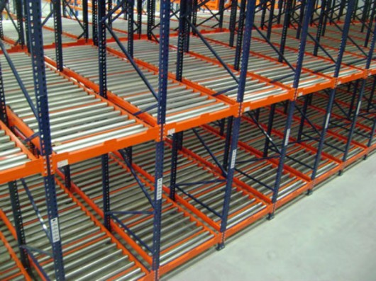

11/2025 → 01/2026
Menu Estoque
O MenuEstoque é uma aplicação web desenvolvida em ASP.NET MVC para cadastro e gerenciamento de produtos. O projeto implementa um CRUD completo utilizando Entity Framework Core para persistência de dados, aplicando o padrão Repository para organização da camada de acesso ao banco e Injeção de Dependência no controller. A comunicação entre front-end e back-end é realizada por meio de requisições AJAX com jQuery, com retorno de dados em JSON, permitindo atualização dinâmica da interface sem recarregamento da página.
Ver mais